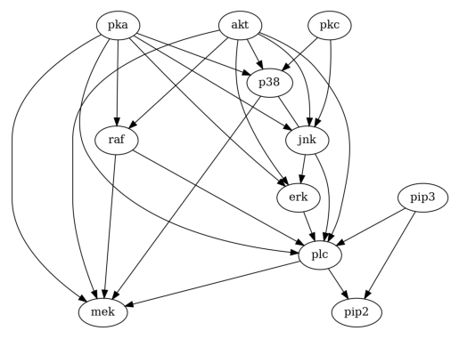
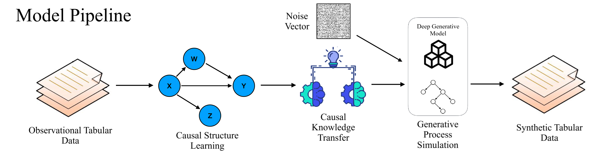
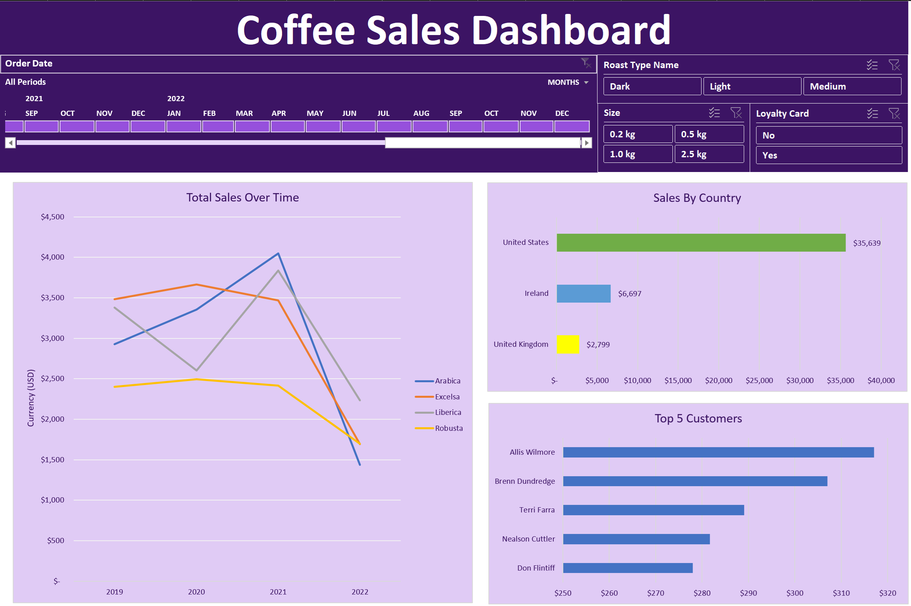
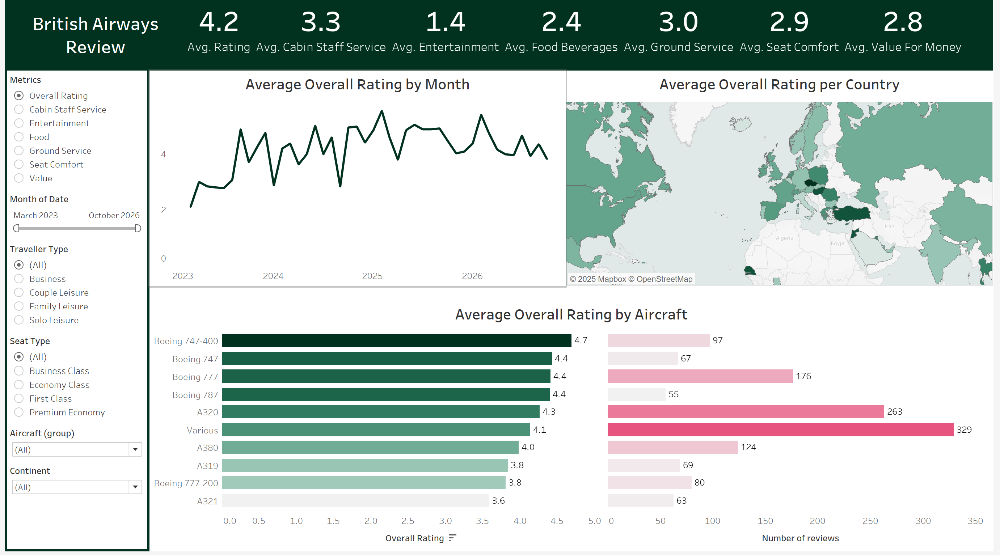
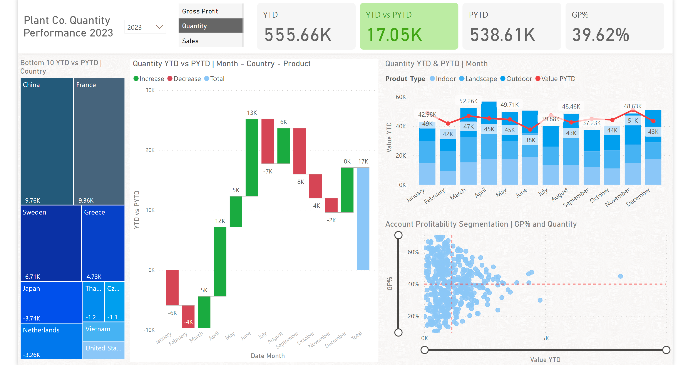
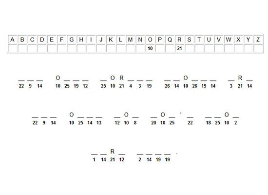
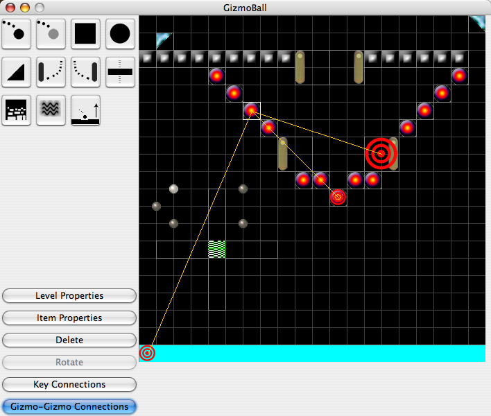

About me

I received the B.Sc. (First Class) degree from the Department of Computer and Information Sciences, University of Strathclyde. I am currently pursuing a Doctor's degree with the same department. My research interests include medicine, healthcare, deep learning, and neural network models. I worked on performing efficient causal structure learning using GANs, Auto-encoders, and Bayesian Networks.
I am a graduating Ph.D. student with a solid foundation in theoretical research and data analysis, along with hands-on experience in data cleaning, preprocessing, visualization, relational databases, and big data within a healthcare setting. At present, I am seeking to transition into the industry as an entry-level data analyst.
I have a strong background in data analysis and wrangling using MS Excel, SQL, and Python, along with proficiency in data visualization and storytelling with Tableau or Power BI. Additionally, I have experience in building, prototyping, and maintaining neural network-based machine learning models using PyTorch.
This website provides access to my research and data analysis projects in the "Research Projects" and "Data Analysis Projects" sections. You can also explore my publications and various side projects under "Publications" and "Miscellaneous."
Found something interesting that catches your eye? Feel free to reach out! My social media links are available on the homepage.
Research Projects
In this section, I provide a brief description of all my academic projects, highlighting the key objectives, methodologies, and outcomes of each. These projects span various domains and demonstrate my ability to apply theoretical knowledge to practical challenges. By outlining these experiences, I aim to showcase my problem-solving skills, technical expertise, and capacity for independent and collaborative research.
Virtual Clinical Trial Emulation with Generative AI Models
This was a Medical Research Council funded research project in partnership with Strathclyde, NHSGGC and Surrey. We aimed for a 6-month robust, fast paced proof-of-concept study to unlock the potential of AI in biomedical and health research. The study has been focused on investigating virtual clinical trial emulations with synthetic data to validate the concept of “generating synthetic data with generative AI and causality learning technology to support virtual clinical trial emulation”.
Background
Real world health data contain important knowledge that enables clinical research to assess treatment effect in real world settings. However, there are significant limitations: real-world data are typically imbalanced across different population, diseases and interventions; they contain bias, noise and missing measurements; the process of removing patient identifiable information may take significant time and effort, which also faces the risk of deleting valuable information from the original data. More importantly, observational studies with real-world data have inherent limitations in their ability to identify treatment effects due to their observational nature.
This project was designed to investigate an alternative approach to support clinical research through the use of synthetic data. We studied the feasibility of virtual clinical trial emulations through creating synthetic patient populations with the help of the latest AI technology in generative AI and causality learning. The clincail trial emulations aimed to answer clinical questions about treatment effect size in a wide range of clinical trial settings.
We have studied the feasibility of this new approach through a specific use case in the context of Type 2 diabetes mellites (T2DM). Through training the AI model with the SCI Diabetes data on the Safe Haven platform, we have carried out virtual trial emulations to assess the effect size of a target drug and compared the outcomes with the real ones.
Methods
We designed our algorithm to learn treatment effects from real-world evidence data by a combined generative AI and causal learning approach. Training data comprised pre- and post-treatment outcomes for 5,476 people with T2DM. We considered three treatment arms: GLP-1 (Liraglutide), basal insulin (glargine), and placebo. After training, virtual trials were conducted by sampling 232 virtual patients per arm (according to the LEAD-5 inclusion criteria) and predicting post-treatment outcomes. We used difference-in-differences (DiD) for pairwise comparisons between arms. Our goal was to emulate LEAD-5 by demonstrating a significant DiD in post-treatment HbA1c reduction for GLP-1 compared to basal insulin and placebo.
Results
We found significant differences in HbA1c reduction for GLP-1 vs basal insulin (-1.21 mmol/mol; p<0.001) and GLP-1 vs placebo (-2.58 mmol/mol; p<0.001) in our virtual populations, consistent with LEAD-5 (Liraglutide vs glargine: -0.24%; p=0.0015, Liraglutide vs placebo: -1.09%; p<0.0001).
Conclusion
AI-powered clinical trials can emulate RCTs in important measurements for T2DM. Our algorithm is specialty agnostic and can explore counterfactual questions, making it suitable for further study in the generalizability of RCT results in real-world populations to support clinical decision-making and policy recommendations.
DAG-WGAN: Causal Structure Learning with
Wasserstein Generative Adversarial Networks
.png)
The combinatorial search space presents a significant challenge to learning causality from data. Recently, the problem has been formulated into a continuous optimization framework with an acyclicity constraint, allowing for the exploration of deep generative models to better capture data sample distributions and support the discovery of Directed Acyclic Graphs (DAGs) that faithfully represent the underlying data distribution. However, so far no study has investigated the use of Wasserstein distance for causal structure learning via generative models. This paper proposes a new model named DAG-WGAN, which combines the Wasserstein-based adversarial loss, an auto-encoder architecture together with an acyclicity constraint. DAG-WGAN simultaneously learns causal structures and improves its data generation capability by leveraging the strength from the Wasserstein distance metric. Compared with other models, it scales well and handles both continuous and discrete data. Our experiments have evaluated DAG-WGAN against the state-of-the-art and demonstrated its good performance.
Efficient Generative Adversarial Dag Learning with No-Curl

Causal structure learning from data is a challenging task as the search space is typically very large. In recent years a series of methods have been proposed to reformulate causality learning into an optimization problem with a continuous acyclicity constraint to allow problem-solving with continuous optimization techniques. This paper further improves on the causality learning results and efficiency of the continuous optimization approach through the use of generative adversarial neural network learning, which overcomes the limitations of using maximum likelihood estimation in the existing methods. In addition, we adapt the recently proposed DAG-NoCurl framework to the generative causal structure learning to improve the speed performance. In particular, our adapted method does not constrain causal structure discovery to its initial estimation, hence allowing further improvement of the learning results. The proposed method has been tested on several benchmarks and compared against the state-of-the-art.
DAGAF: A directed acyclic generative adversarial framework
for joint structure learning and tabular data synthesis

Understanding the causal relationships between data variables can provide crucial insights into the construction of tabular datasets. Most existing causality learning methods typically focus on applying a single identifiable causal model, such as the Additive Noise Model (ANM) or the Linear non-Gaussian Acyclic Model (LiNGAM), to discover the dependencies exhibited in observational data. We improve on this approach by introducing a novel dual-step framework capable of performing both causal structure learning and tabular data synthesis under multiple causal model assumptions. Our approach uses Directed Acyclic Graphs (DAG) to represent causal relationships among data variables. By applying various functional causal models including ANM, LiNGAM and the Post-Nonlinear model (PNL), we implicitly learn the contents of DAG to simulate the generative process of observational data, effectively replicating the real data distribution. This is supported by a theoretical analysis to explain the multiple loss terms comprising the objective function of the framework. Experimental results demonstrate that DAGAF outperforms many existing methods in structure learning, achieving significantly lower Structural Hamming Distance (SHD) scores across both real-world and benchmark datasets (Sachs: 47%, Child: 11%, Hailfinder: 5%, Pathfinder: 7% improvement compared to state-of-the-art), while being able to produce diverse, high-quality samples.
Data Analysis Projects
This section is dedicated to my personal data analysis portfolio projects. Here you will find a plethora of different topics from data cleaning, pre-processing and analysis to automation, relational database exploration and data visualization. All of the projects are available on my GitHub page. Link is provided on the homepage.
Relational database analysis with ETL pipeline

This is an SQL Relational DataBase Management System project aiming to explore the complex relationships between multiple tables. The contents of the database is automatically loaded into tables through my ETL pipeline established using SQL stored procedures available in the server_config.sql script.
The sales.stores table includes the store's information. Each store has a store name, contact information such as phone and email, and an address including street, city, state, and zip code. The sales.staffs table stores the essential information of staffs including first name, last name. It also contains the communication information such as email and phone. The production.categories table stores the bike's categories such as children bicycles, comfort bicycles, and electric bikes. The production.brands table stores the brand's information of bikes, for example, Electra, Haro, and Heller. The production.products table stores the product's information such as name, brand, category, model year, and list price. The sales.customers table stores customer's information including first name, last name, phone, email, street, city, state and zip code. The sales.orders table stores the sales order's header information including customer, order status, order date, required date, shipped date. The sales.order_items table stores the line items of a sales order. Each line item belongs to a sales order specified by the order_id column. The production.stocks table stores the inventory information i.e. the quantity of a particular product in a specific store.
Throughout this project, I conducted an in-depth analysis of the relationships between various tables to uncover significant data trends. These insights can then be analyzed and visualized to generate valuable reports that inform strategic business decisions.
I utilized a range of techniques to accomplish the outlined objectives. Initially, I leveraged fundamental SQL statements and aggregate functions from the basics.sql script. Then, I incorporated more advanced functionalities from the intermediates.sql and advanced.sql scripts, enabling a deeper exploration of the data.
The data exploration performed in support of this project includes the following topics:
- BASICS: SELECT, FROM, WHERE, IN, LIKE, BETWEEN, GROUP BY, ORDER BY, WildCards, CREATE/DROP TABLE, HAVING, CASE, IF, INSERT, MAX(), MIN(), AVG(), SUM(), COUNT() Statements/clauses , primary and compund keys
- INTERMEDIATES: Subqueries, Various window functions including ROW_NUMBER(), RANK(), DENSE_RANK() and aggragate functions, PARTITION BY, Common Table Expressions (CTEs), Views
- ADVANCED: LEAD and LAG, RECURSION, TRIGGERS, STORED PROCEDURES and AUTOMATION, DATE, DATETIME, DATEPART(), DATEDIFF()
The database used throughout this project is the Bike Store Relational Database | SQL available at https://www.kaggle.com/datasets/dillonmyrick/bike-store-sample-database.
For the duration of this project, I developed a user-friendly ETL pipeline for automatic data retrieval and pre-processing using SQL stored procedures, cutting processing time by 33% while enhancing data correctness by 25%. Additionally, I also optimised data extraction and integration using JOIN and VIEW in a relational database, cutting query execution time by 30% and improving data accessibility by 25. I performed feature engineering as well, reducing search space by 15%, improving filtering efficiency by 25%, and enhancing data usability by cutting retrieval time by 30%. Finally, I conducted SQL data exploration, uncovering 66% more insights, improving query speed by 30%, and automating 66% of repetitive analysis tasks using stored procedures, common table expressions, subqueries, and dynamic SQL.
Data Cleaning and Wrangling With SQL
Data cleaning is a crucial process in any data analysis project. It involves identifying and correcting or removing inaccuracies, inconsistencies, and errors in the data. While it may seem like a tedious and time-consuming task, data cleaning is essential for obtaining reliable insights and making informed decisions based on data. Without proper data cleaning, the quality and accuracy of your analysis may be compromised, leading to incorrect conclusions and ineffective strategies.
To solve this problem we need a powerful tool. SQL provides a fast and efficient way to identify and address issues in large datasets. SQL can be used to filter out irrelevant data, standardize formatting, detect and remove duplicates, and handle missing values. By leveraging SQL for data cleaning, you can streamline the process and ensure that your analysis is based on high-quality, accurate data.
Throughout this project, I aim to develop an automated process for data Extraction-Transformation-Loading, using stored procedures in SQL. Topics that are covered by my ETL pipeline include:
- EXTRACTION: Populating a database with data from various sources stored in tables using an automated process defined by multiple stored procedures.
- TRANSFORMATION: Applying various techniques for cleaning data and preparing for it further analysis. Techniques include: triming data, feature engineering, removing NULL(s) or populating empty values, removing duplicate rows and columns, standardizing data formats, renaming columns with bad names and organizing the columns of tables in a more consistent manner.
- LOADING: Exporting the cleaned data from the database by creating a backup of its database for future application.
The datasets used throughout this project are available at https://github.com/danmarques-dt/SQL_data_cleaning_and_analysis_employees/tree/main.
Coffee sales dashboard

Excel is a powerful tool for data analysis, offering a wide range of advanced techniques that can help you uncover insights and make data-driven decisions. This is a project aiming to develop a pipeline of data pre-processing and analysis within Excel.
In particular, I work on a coffee dataset by applying data cleaning, buidling pivot tables and visualizing data with dashboards in order to analyze data and present business insights in a meaningful and digestable way.
Topics that are covered in this exploration include:
- Pivot Tables
- Functions and formulae -> MIN(), MAX(), SUM(), POW(), SQRT(), AVG(), IF(), IFS(), LEN(), LEFT(), RIGHT(), TEXT(), TRIM(), CONCATENATE(), SUBSTITUTE(), SUMIF(), SUMIFS(), COUNT(), COUNTIF(), COUNTSIFS(), DAYS(), MONTHS(), YEARS(), NETWORKDAYS(), UPPER(), LOWER(), PROPER(), INDEX()
- XLOOKUP and VLOOKUP
- Conditional Formatting
- Various Charts
- Data Cleaning in Excel
While working on this project, I transformed and processed client data in Excel, improving validity by 35% through data cleaning while maintaining high-quality standards. Moreover, I improved data completeness by 25% by leveraging XLOOKUP to populatemissing values, significantly reducing manual data entry time. Afterwards, I utilised PivotTables for trend analysis, generating data-backed insights that drove strategic decisions, leading to a 15% market expansion and a 20% improvement in product adoption. Finally, I designed an interactive Excel dashboard to visualise coffee data trends, improving data interpretation, leading to a 20% increase in sales insights accuracy, and boosting sales growth by 15% through better customer targeting.
British Airways review

Data visualization is a crucial aspect of data analysis, enabling data scientists to present information in an understandable and visually appealing format. Mastering this skill is essential for effective communication with end-users, as raw data and analysis outcomes are not always immediately comprehensible to those who do not work directly with data. By bridging this gap, data visualization allows end-users to appreciate the value and possibilities of data analysis.
This project outlines a comprehensive end-to-end data analysis pipeline, beginning with an ETL process performed using SQL and culminating in data visualization using Tableau. The ETL stage, implemented in the ETL_pipeline_for_Tableau.sql script, handles data preprocessing and cleaning. Key operations include using TRIM to remove unnecessary white spaces from text columns, identifying and eliminating NULL values, standardizing date formats, and replacing semi-colons with commas to enhance readability.
The outcome fo the visualization stage is an interactive dashboard built using Tableau available in the Tableau_Portfolio_project_2.twb file. Alternatively, the dashboard is available at https://public.tableau.com/app/profile/hristo.petkov/vizzes. Topics that are covered in this visualization include:
- Joins and Relations similar functionality to that provided by SQL, but on the Tableau side
- Bar, Map, Line charts and Tables similar functionality to that provided by Excel, but on the Tableau side
- Interactbale filters and sliders
- Grouping values, Calculated Fields and Parameters
- Horizontal and Vertical formatting
As part of this project, I implemented a high-performance SQL-based ETL pipeline with modular cleaning protocols in SQL Server, cutting processing time by 80% and reducing data inconsistencies by 5%. I also optimised data retrieval by applying calculated fields, parameters, and dynamic grouping in Tableau, narrowing the data space based on specific client requirements and increasing relevant content extraction by 50%. Last but not least, I developed an interactive Tableau dashboard to visualise British Airways reviews by country, month, and aircraft, cutting report preparation time by 50% and enabling faster, data-driven decision-making.
Company performance analysis

The aim of this project is to recreate the data modeling/analysis process from start to finish all within a single framework based on Microsoft Power BI.
The data is first loaded and cleaned using Power Query and DAX, following standard procedures such as trimming text, standardizing dates, performing feature engineering, detecting and removing duplicates and NULL values, and renaming or reformatting columns for better readability. Next, I establish measurements and relationships within the data, enabling filtering and exploration to generate valuable business insights. Lastly, I visualize the cleaned data and its relationships through an interactive dashboard, incorporating conditional formatting to emphasize key features. This dashboard effectively presents a data-driven narrative, providing actionable insights to support decision-making within the company.
The complete project is available in the PowerBI_Portfolio_Project_2.pbix file. Topics that are covered in this project include:
- Data cleaning with Power Query
- Creating new tables with DAX
- Adding calculated columns with DAX
- Building measures and relationships
- Developing core visualizations -> cards, slicers, treemap, watterfall chart, line stacked shart, scatter chart, stacked bar chart, clustered column chart, gauge chart, donut chart
- Conditional formating
In this project, I transformed and loaded company data using DAX and Excel, saving 60-80% in time spent on data preparation, improving data quality by 25%, and enhancing report consistency by 50%, leading to 5-15% higher team productivity. Soon after, I developed a Power BI dashboard with conditional formatting to compare Gross Profit (≥40%), Quantity (30K), and Sales ($500K), accelerating executive decision-making by 3-5x and reducing ad-hoc report requests by 20%. In addition, I collaborated with business analysts to define key metrics for the final product, leading to a 40% improvement in reporting quality. To conclude the project, I provided business insights to optimise data utilisation for executing strategies, contributing to revenue growth and cost savings, driving a 10-15% increase in profitability.
Miscellaneous Projects
In this section, I showcase projects unrelated to my work experience but tied to my hobbies or personal interests. All files for these projects are available on my GitHub. Found something you are curious about? Do not hesitate to contact me. My socials are on the homepage.
Simple Linux Shell

My team and I were tasked to create a simple Linux shell in C. A shell is a program that allows users to interact with an operating system, manage directories or files, and run other programs. My practical responsibilities consisted of implementing aliasing for commands, writing and loading the shells history and aliases to/from external files on opening/terminating the shell, getting and setting the shells path, testing the code as each feature was developed and general housekeeping. We faced technical challenge's along the way like getting the aliasing to work correctly, which we overcame through collective problem-solving and testing. Alongside the practical work, we studied the basics of operating systems. This deepened my understanding of C programming, providing a better quality project.
The shell prompts the user for input, reads and parses user input correctly, executes external commands, sets it's home directory, gets the current path when asked and restores it's home path on exiting, changes directories, adds the past 20 commands to an external history file and gets a command from the file and executes it, keeps a persistent history of commands, set ups, invokes, removes and prints aliases and keeps persistent aliases
Cryptogram Code Breaking Game

In a team of three, we built a game containing a code breaking algorithm. The functionality of our program is built upon the Model-View-Controller (MVC) design pattern. This experience was valuable for us as it helped us develop competency in applying various software engineering patterns throughout the project. We also validated the functionality of our approach using JUnit testing to ensure correctness. All people involved in the coding, testing and refactoring process contributed equally to this project.
The Model in our project is implemented by several classes: Player, Players, Cryptogram, CryptogramFactory, LetterCryptogram, and NumberCryptogram. The Player class contains all the critical fields and methods needed to interact with the other classes. It offers two constructors, one for loading an existing player and another for creating a new player, which, in turn, invokes a method to generate a new save file containing the updated information. The Players class maintains an ArrayList of Player instances and provides methods to add, remove, and find players, as well as to return lists detailing players' accuracies, times, and the cryptograms they have played and completed. Additionally, our cryptogram functionality is designed using the Factory Model via the CryptogramFactory. This class is tasked with reading strings from a file and includes a method that lets the user choose whether to encrypt the string with letters or numbers. Depending on the selection, it creates an instance of either the LetterCryptogram or NumberCryptogram class, both of which inherit from the Cryptogram class.
Our Game class functions as the controller. It includes methods for saving the game by storing both the encrypted and non-encrypted phrases in a .txt file. Additionally, it utilizes the playGame() method to initialize the GUI. Lastly, it provides a method for loading a previously saved game back into the program.
The CryptogramGUI class represents the View component of the design pattern. The GUI is well-structured, ensuring smooth functionality with proper error and exception handling. It begins with an overview explaining the purpose of the product, followed by the first crucial component, which is authentication. Users are required to either log into an existing account, which is retrieved from a saved file, or create a new one, which is automatically stored upon creation. The login process is straightforward, requiring only a username, as the game cannot be played without a registered user. Once logged in, the player is directed to the main menu, where they can choose from various options: Scoreboard, New Game, Load Game, Credits, or Exit Game. Players can view their statistics, start a new game, load a saved game, or exit. If a player starts a new game or loads an existing one, they enter the playing field, where they engage with a cryptogram, which may be either letter-based or number-based. The GUI provides additional functionalities such as hints, frequency analysis, letter input, undoing the last entry, resetting the cryptogram, and saving progress.
Our program includes three classes dedicated to unit testing. The first, PlayerTest, contains seven JUnit tests to verify that the Player class functions as expected. The second, CryptogramTest, consists of five tests that ensure the mapping process works correctly and that frequency values are accurately maintained. Lastly, CryptogramFactoryTest validates the creation of different cryptograms and ensures proper file reading from the list of phrases.
Gizmoball - Physics Engine

As a team of five, we were assigned to develop a game called Gizmoball using a Physics Engine provided by MIT, coded in Java. The game featured a ball, walls in various shapes such as squares, circles, and triangles, as well as user-controlled flippers. It closely resembled pinball. Each team member contributed equally to the project's development.
Our GizmoBall implementation incorporates the MVC design pattern which splits our design to three parts: Model, View, and Controller. I focused on applying the software engineering patterns needed to efficiently connect the different components of our MVC build.
The Model contains all back-end functionality. It defines the Gizmo interface, which is implemented by various gizmos like Bumpers, Absorbers, and Flippers. Each gizmo has its own specific properties, including length, trigger, and collision details. The Model class also includes methods to move, retrieve, and add balls. Additionally, it extends the Observable class to facilitate communication with the View and Controller.
The View contains all front-end functionality. The user-interface including the board, buttons, and bars are created and displayed in this class. It uses 2 main interfaces, IGUI and IBoard. The former will has methods to create buttons, menu bar, and message to display to the user and is implemented by the two classes RunGUI and BuildGUI which are the two possible modes of the game Run and Build modes. The latter is a Board interface which is implemented by RunBoard and BuildBoard classes. These classes are used by View to create the GUI board. Board classes call update() to notify other classes of any changes.
The Controller side of our implementation includes different listeners which handle user actions. The class diagram includes three listener interfaces: GizmoListener, KeyboardListener, and MouseListener. GizmoListener is implemented by RunListener and BuildListener which include the methods actionPerformed(), setListener(), and update(). RunListener calls moveBall() from Model whenever actionPerformed() is called. KeyboardListener classes RunKeyboardListener and BuildKeyboard listener handle keyboard presses in both run modes. They will be responsible for connecting gizmos and some functionality to keyboard shortcuts. Finally, addGizmoListener() will notify the view whenever the user clicks on the addGizmo button.